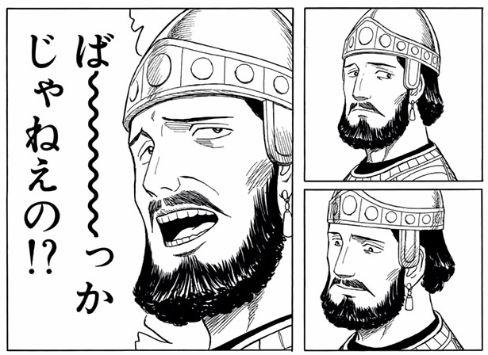
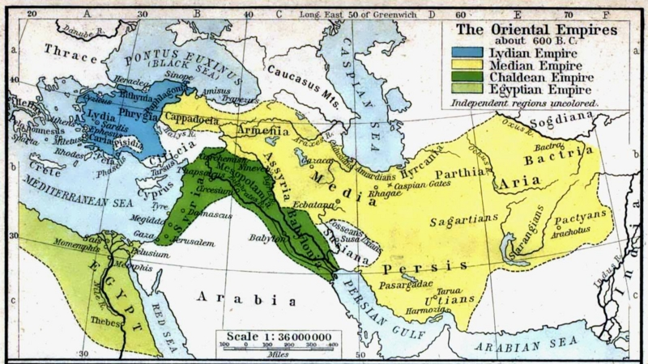
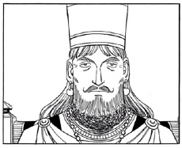
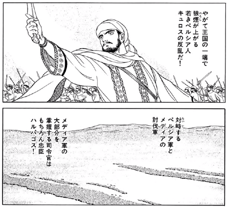

今日の名言：「ば～～～っかじゃねえの！？」
公開日：

今日はメディア ペルシアの名将・ハルパゴス氏にお越しいただきました。よろしくおねがいします。「ば～～～っかじゃねえの！？」。さっそくですね。お手柔らかにお願いします。っつーか、来ていただいてなんですが、めんどくさいので勝手に進行させていただきます。
メディアとスキュタイ人

かつて、メディアという国があった。デイオケスという男が建てた国だったが*1、プラオルテス、キュアサクレスと代を重ねるにつれ領域を広げ、とうとうハリュス川以東のアジアのほとんどを掌握するに至る*2。残るめぼしい勢力はアッシリア人ぐらいなものだったが、それもキュアサクレスに首都ニネヴェを包囲され、城下の誓いを強いられるのも時間の問題だと思われていた。
そこへ急襲したのが、スキュタイ（スキタイ）人。南ウクライナに住んでたキンメリア人という人たちを追い回しているうちに、うっかりメディアの支配地にまで足を踏み込んでしまったのだ。
メディアは、このスキュタイ人に手も足も出なかった。メディアを従えたスキュタイ人はうっかり全アジアを席巻、うっかりエジプトにまで迫る勢いだったが、当時のエジプト王サンメディコスの贈り物攻撃とエクストリーム泣き落とし、ジャンピング土下座に屈服して兵を収めた。スキュタイによるアジアの支配は28年に及ぶ。
このスキュタイ人のやりたい放題に終止符を打ったのは、ほかでもないキュアサクレスだった。彼は宴会にスキュタイ人を招いてはぶっ殺すという甚だ紳士的なやり方で、父祖伝来のメディアをスキュタイ人から取り戻した。ついでにバビロニアを除くすべてのアッシリア人を征服してしまう。波乱万丈の人生を送ったメディア王キュアサクレスは、スキュタイ支配の期間も含め、在位40年でその生涯を閉じた。
メディア王アステュアゲスの夢

メディアを受け継いだのは、キュアサクレスの子アステュアゲス。彼はよく変な夢を見る体質だったらしい。たとえば――
彼にはマンダネという娘がいた。あるとき、アステュアゲスはマンダネがおしっこを漏らす夢を見た。まぁ、それぐらいだったらよくあることかもしれない。しかし、さすがメディアを総べる王、アステュアゲスの夢はスケールがデカかった。マンダネの洩らしたおしっこは、首都エクタバナの街に溢れたのみならず、アジア全土に氾濫したのである。
びっくりしたアステュアゲスは、夢占いにこれを語った。夢占いもさぞかしビックリ、内心「この変態野郎！」と思ったことだろう。
この夢が頭から離れないアステュアゲスは、娘をメディア人の貴族には嫁がせず、カンビュセスという若者に嫁がせる。カンビュセスは大人しく、家柄も悪くない男だったが、ペルシア人だった。メディア人からしたら所詮「二級市民」である*3。
ところが、マンダネがカンビュセスに嫁いだ最初の年、またもやメディア王アステュアゲスは夢にうなされる。今度はマンダネのま○こから一本のブドウの木が生え、その木がアジア全土を覆ってしまったのだ。マン……だけに（←黙ってろ
びっくりしたアステュアゲスは、夢占いにこれを語った。夢占いもさぞかし呆れ、内心「どうしてこうなった……／(＾o＾)＼」と思ったことだろう。
もうどうでもよくなった夢占いは、とりあえず「あ、これ、お孫さんが全アジアを支配するってことじゃないですかね、おめでとうございます」と答えてみた。しかし、その意図はアステュアゲスの脳みそにちゃんと届かなかったらしい。アステュアゲスは孫に王位を奪われると勘違いしてしまった。
アステュアゲスは懐妊中のマンダネをペルシアから呼び寄せ、厳重に監視させた。生まれた子どもは殺さなくてはならない。アステュアゲスはすっかりそんな妄執に捕らわれていた。
生まれた子ども（♂）の“処分”は、有能な忠臣・ハルパゴスに託された。
困ったハルパゴス、羊飼いに責任を押し付ける
ハルパゴスは王の命令を謹んで拝命したが、内心は従う気がなかった。
というのも、アステュアゲスは高齢なのに男児がいない。となれば、アステュアゲスのあと王位を受け継ぐのは王女マンダネであろう。いかに先代の王の命令とはいえ、女王の息子に手をかけたとなればタダでは済むまい。後年、責めを負わされるのは目に見えている。しかし、王はどうやら本気のようだ。この赤子を殺さなければ、殺されるのはハルパゴスであろう。
そこで有能なハルパゴスは一計を案じた。アステュアゲス王自身の部下に命令してやらせればいい。ハルパゴスはアステュアゲスの牛飼いの一人を呼び出してこう言った。「おめえが殺れ」
牛飼いからしたらいい迷惑である。牛飼いは、赤子を抱いて悄然と家路についた。牛飼いには、明日にも子どもが生まれそうな妻がいる。牛飼いは、子どもが生まれるのを心待ちにしていた。なので、託された赤子を殺す気にはどうしてもなれなかった。
しかし、そのとき、すでに牛飼いの妻は流産してしまっていたのだった。牛飼いから事情を聴いた彼女は、牛飼いに泣いてすがって赤子を見捨てないでほしいと頼んだ。我が子を死産した日に、よその赤子をもう一人殺すのか。この子は水子の生まれ変わりだ。大事に育てましょうよ。
牛飼いはそれに同意し、自分の子の死骸を山に捨て、ハルパゴスの部下に検分させた。赤子の殺害を命じたことに後ろめたさを感じていたハルパゴスは、牛飼いの簡単なトリックにまんまと騙されてしまう。
偉大な王・キュロス
“牛飼いの子”はスクスクと成長した。誰にもその出生を知られずに。しかし、10歳になったとき、ひょんなことからその素性が明らかになってしまう。
ある日、牛飼いの子は同じ年頃の子どもたちと遊んでいた。当時、子どもたちの間では“王様ゲーム”が流行っていたらしい。“王様ゲーム”といっても現代のような破廉恥なゲームではなく、一人の王を選んでみんながそれに従うという“おままごと”を少し本格的にした遊びであったらしい。牛飼いの子はこの“王様ゲーム”を、いうことを聞かない貴族の息子を鞭で打つという迫真の演技でみごと演じきる。
鞭打たれた貴族の息子は、アステュアゲスに言いつけた。「王よ、あなたの牛飼いからこのような狼藉を受けました」 子どもの喧嘩まで仲裁しなければならないとは、王とは大変な役割だ。それでもアステュアゲスは牛飼いの子を呼びつけ、事情を聴いたのだから、割りと公平な王だったのかもしれない。牛飼いの子は胸を張ってこういった。「みんなはちゃんと僕の言いつけを守ったのに、こいつは守らなかった。みんなが僕が王に向いていると思い、僕を王に選んだのに」
10歳にしては堂々としている牛飼いの子をみて、アステュアゲスは不審に思った。しかも、なんだか見覚えがある。自分や、娘のマンダネの面影があるような……。指折り数えれば、捨て子にした孫と年齢が一致するようにも思える。気が動転したアステュアゲスは、牛飼いを呼びつけ、問いただした。牛飼いは観念してすべてを洗いざらい白状してしまう。「王よ、彼はあなたの孫、キュロス様です」
怒り狂った王は、しかしその怒りを面には表さず、ハルパゴスに言った。
「わしもあの子に加えた仕打ちについては痛く悩んでおったし、また娘からも恨まれて心安らかでなかった。幸い運よくかようなめでたい結末になったのであるから、お前の倅を、生きた帰ってきたあの子のところへよこしてやってはくれぬか。また子どもを救ってくだされた神に、命拾いのお礼にお祭りを務めたいと思うから、わしのところへ食事に来てくれ」
こうして、ハルパゴスは自分の息子のステーキをアステュアゲスに食わされるハメになる。
ハルパゴスの復讐
自分が食べたステーキが息子の肉と知っても眉ひとつ動かさず、「王のなされることにはどのようなことでも、私は満足でございます」と頭を下げ、残った肉をお土産にして屋敷へ持ち帰ったハルパゴスの心中はいかばかりであったろう。
ハルパゴスは一層の忠義に励むことでアステュアゲスの信頼を勝ち得る一方で、重臣たちに入念な根回しを行い、徐々に味方を増やしていった。 「あいつ、娘のおもらしとかま○この夢ばっかみてんぞ。終わってると思わへん？」 そして、ウサギの腹に手紙を仕込んでキュロスに送り、反乱を唆す。「あなたを赤子のときに殺そうとしたのはだれか、思い出せ！」

ハルパゴスはこの復讐の準備に、30年の歳月をかけたらしい*4*5。キュロスの反乱を鎮圧するための総司令官に選ばれたハルパゴスは華麗にメディアを裏切り、アステュアゲスは（アケメネス朝）ペルシアの軍門に下ることになる。
ちなみに、キュロスという男は大した度量の持ち主のようで、アステュアゲスには何も危害を加えず、死ぬまで自分のもとに置いたという*6。彼はペルシアを侵略したリュディアを返り討ちにして征服した時もリュディア王クロイソスを殺さず、参謀として使っている。
ハルパゴスのその後
ハルパゴスは割と有能な男で、キュロスにもかなり重宝されたらしい。
彼がヘロドトスの『歴史』に初登場するのは、リュディアの首都サルディス近郊でキュロスがリュディア王クロイソスと対峙した時のこと。キュロスはリュディアの騎馬部隊が精強なことに恐れを抱いていたが、ハルパゴスはラクダ騎兵を編成してこれに当たらせるという策を勧めた。馬はラクダの体臭を嫌う。この策は大当たりし、リュディアの騎馬部隊はキュロスのラクダ部隊と遭遇するや否や逃走してしまう。
ちなみに、この策は後年、ローマや十字軍を相手にも採用され、戦果を挙げている。
また、キュロスは初め、対イオニア（小アジアのエーゲ海沿岸部）戦線の司令官にマザレスという男を任命していたが、彼が病死するとハルパゴスを後任に指名。ハルパゴスは相手を街に追い詰め、城壁の前に土を盛って攻略する“盛り土”作戦でイオニアの諸都市を征服したという。
 (アフタヌーンKC)")
- 作者: 岩明均
- 出版社/メーカー: 講談社
- 発売日: 2004/10/22
- メディア: コミック
- 購入: 11人 クリック: 136回
- この商品を含むブログ (285件) を見る
")
- 作者: ヘロドトス,松平千秋
- 出版社/メーカー: 岩波書店
- 発売日: 1971/12/16
- メディア: 文庫
- 購入: 3人 クリック: 199回
- この商品を含むブログ (23件) を見る
*1:この過程がまたちょっと面白いのだけど、また別の話
*2:ハリス河畔の戦い。メディアがリュディア（リディア）へ攻め込んだが、偶然日食が起こり、ここを国境とすることで双方が合意し、兵を引いた
*3:曰く、メディアの属国の王だという
*4:自信はない。Wikipedia によるとキュロスの生年が紀元前600年頃、反乱は紀元前552年のできごとなので、キュロスが40歳から50歳ぐらいの頃の話。ハルパゴスはキュロスが10歳のころから30年は我慢していたことになる
*5:アステュアゲスが長生きでよかったな！
*6:ヘロドトスによるとアステュアゲスの在位は35年。ハルパゴスへの仕打ちは、王位について間もないころの話だったのだろうか